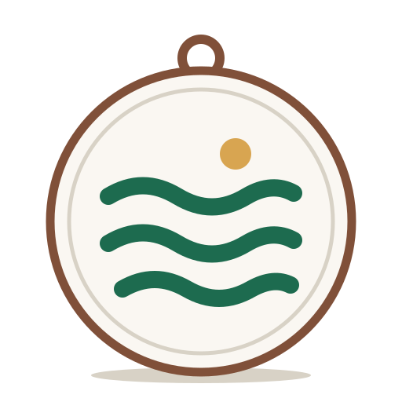
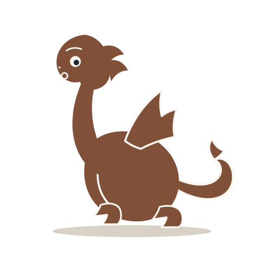

G25.09 · issue #707 · эпік #346 · шаблон 1/4
Кампазіцыя скрыншотаў крам — тэлефон
Адзін складнік кампазіцыі: загалоўная зона → прылада з жывой паверхняй прадукта → дракон з рэплікай → бурштынавы акцэнт медальёна. Слот паверхні перасоўваецца: спіс каталога ці панэль Run. Радкі інтэрфейсу ў прыладзе — даслоўна contracts/ui-messages/source.json (be) і translations/en.json (en); прэс-тэкст загалоўкаў і рэпліка дракона — аўтарскія, пазначаныя ў кожным пункце figcaption.
Крыніцы: брыф «Атлас знаходак» v1 (08.10.2026, рэдакцыя
a11ea86) · канон G06.07 (visual-language.md) · пазы дракона G25.03 · медальён G25.05 · слоўнік G25.02 · патрабаванні крам, правераныя 12.10.2026 (§1). Статус: канцэпт, не фінальныя здымкі; фінальныя скрыншоты робяцца з жывой зборкі перад публікацыяй.§1 · Анатомія кампазіцыі зоны, бяспечныя прасторы, правілы напаўнення
| Зона (зверху ўніз) | Змест | Шрыфт і колер | Правілы напаўнення |
|---|---|---|---|
| Загалоўная зона | 1–2 радкі прэс-тэксту + падзагаловак з дзейнай ідэнтыфікацыяй прадукта | Alegreya 600; подпіс — Golos, muted | ≤ 2 радкі загалоўка; калі не лезе ў абедзьве мовы — караціць копію, не памер шрыфта. Ніжняя мяжа зоны — верх прылады (падрабязна §6 і ў results). |
| Бяспечная прастора згоры | пустая паласа над загалоўкам | — | Play і App Store малююць сваю стужку/загаловак над скрыншотам у рэгіёне; крытычны тэкст не бліжэй за 96 px (Play) / 120 px (App Store) ад вярху. |
| Слот прылады | паверхня прадукта: спіс каталога (в. A) або панэль Run (в. B) | Golos + Alegreya; канонавыя карткі і кнопкі | радкі — даслоўна са слоўніка; усё, што паказана ў прыладзе, мае дзейную здольнасць прадукта. Пазнакі «канцэпт» на канве — абавязковыя. |
| Дракон | поза «спакойны» (в. A) / «цікаўны» (в. B) + рэпліка Caveat | Caveat, clay (6.29:1 на паперы) | дракон — твар, не лагатып (канон §6); рэпліка — даслоўна формула з брыфа «Куды? Хадзем, паглядзім» / аўтарскі пераклад. |
| Бурштынавы акцэнт | медальён «Адлюстраванне» малы | Golos на бурштыне: ink, 6.83:1 | адзін акцэнт на канве; бурштын — прапанова B04.2, толькі з цёмным тэкстам. |
| Ніжняя стужка | да 3 чыпаў рэальных магчымасцяў | Golos 600; чып real — акцэнт | толькі дзейныя факты (аўдыё і тэкст / Бясплатна / мовы). Абяцанняў пра ўзнагароды, падарункі і «усе гіды» няма. |
Памеры канваў і крыніцы патрабаванняў — §2–§5 падпісы і §1 ліста вынікаў (results/G25.09.md). Экспарт PNG: дадаць да адрасу ?only=<canvas-id>, здымак chromium --headless --screenshot --window-size=<W×H>; каманды — у README тэчкі.
§2 · Google Play · 1080×1920 (9:16) · беларуская патрабаванне, праверанае 12.10.2026: 320–3840 px на бок, 16:9/9:16, JPEG або 24-біт PNG без альфы, ≤ 8 МБ, 2–8 здымкаў — support.google.com/googleplay/android-developer/answer/9866151
бяспечная прастора згоры 96 px — стужка крамы
Аўдыёпрагулкі
па горадзе
Аўдыёгіды для гарадскіх прагулак
KUDYГорад
ПрагулкаЧым заняцца →Побач →KUDY
Бясплатна
Воднае люстра Гданьска
Загрузіць
Змешана
Стокі і краны
p
l

Куды? Хадзем, паглядзім

аўдыё і тэкст
Бясплатна
Мовы: be en uk de es fr cs sv
1080×1920 · play-be
канцэпт — не фінальны здымак
web.ui.privacyIntro («Аўдыёгіды для гарадскіх прагулак»; запіс пачынаецца «KUDY — …» і мае хвост пра старонку). Рэпліка дракона — даслоўна формула брыфа §Сутнасць. Назвы гідаў у картках — аўтарскія ўзоры кантэнту (пазначаны ў §7 правах).§3 · Google Play · 1080×1920 (9:16) · англійская тыя ж патрабаванні, што §2; пераклады — даслоўна translations/en.json; аўтарскі прэс-тэкст перакладзены з пазнакай
Audio walks
around the city
Audio guides for city walks
KUDYCity
WalkWhat to do →Nearby →KUDY
Free
The water mirror of Gdańsk
Download
Mixed
Shipyard cranes
p
l
Where to? Let’s go
and see
and see
audio and text
Free
Languages: be en uk de es fr cs sv
1080×1920 · play-en
concept — not a final capture
translations/en.json (Walk, What to do →, Nearby →, Free, Mixed, Download, Time: ${minutes} min…). Прэс-тэкст і рэпліка дракона — аўтарскі пераклад беларускай версіі, не з каталога перакладаў.§4 · App Store · 1320×2868 (6.9″) · беларуская і англійская патрабаванне, праверанае 12.10.2026: вядучы памер 6.9″ 1320×2868, PNG/JPEG без празрыстасці, маштабуецца на меншыя дысплеі — developer.apple.com/help/app-store-connect/reference/screenshot-specifications
бяспечная прастора згоры 120 px
Аўдыёпрагулкі
па горадзе
Аўдыёгіды для гарадскіх прагулак
KUDYГорад
ПрагулкаЧым заняцца →Побач →KUDY
Бясплатна
Воднае люстра Гданьска
Загрузіць
Змешана
Стокі і краны
p
l
Куды? Хадзем, паглядзім
аўдыё і тэкст
Бясплатна
Мовы: be en uk de es fr cs sv
1320×2868 · as-be
канцэпт — не фінальны здымак
web.ui.privacyIntro, як у §2.Audio walks
around the city
Audio guides for city walks
KUDYCity
WalkWhat to do →Nearby →KUDY
Free
The water mirror of Gdańsk
Download
Mixed
Shipyard cranes
p
l
Where to? Let’s go
and see
and see
audio and text
Free
Languages: be en uk de es fr cs sv
1320×2868 · as-en
concept — not a final capture
translations/en.json.§5 · Варыянт B слота прылады — панэль Run · Google Play 1080×1920 · беларуская доказ перасоўнага слота: тая ж кампазіцыя, іншая жывая паверхня
Пачуй гісторыю
на месцы
Гісторыі гучаць на кропках, тэмп — твой
KUDYПрагулка
p
g
a
l
Схема кропак маршруту — карта горада зʼявіцца пасля рашэння пра тайлы
Зараз граеПаўза
Гданьскі кран
Кропка 3 · Асноўная гісторыя

Куды? Хадзем, паглядзім
GPS-аўтазапуск на месцы
Офлайн без інтэрнэту
1080×1920 · play-be-run
канцэпт — не фінальны здымак
native.run.nowPlayingLabel; маркеры — станавыя заливкі канона (played/playing/available/locked). GPS-аўтазапуск і офлайн — даслоўныя факты web.ui.appBenefitGps/appBenefitOffline у кароткай форме; аўтарскі загалоўкавы варыянт — «Пачуй гісторыю на месцы». «Зараз грае», «Паўза», «Асноўная гісторыя», «Кропка ${position}» — даслоўна слоўнік; назва гісторыі — аўтарскі ўзор (§7).